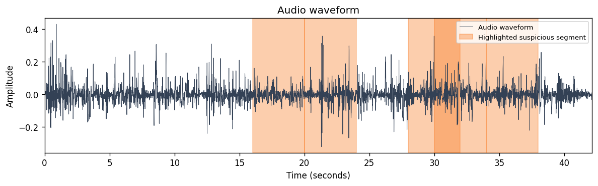

Deepfake Audio Detector — Local Demo
Research project: Forensic Acoustic for Synthetic Speech Detection
Case ID: CASE-F25F28639504
File: human_001_clean.wav
Duration: 42.1334 s
Generated: 2026-06-02T21:13:19.659665+00:00
Main result
Suspicious audio indicators found
Highlighted segment: 00:16 – 00:20
Manual review recommended
Evidence axes
- AI-origin evidence: Not detected — No strong experimental indicators were highlighted on this axis. This does not prove authenticity.
- Replay evidence: Not detected — No strong experimental indicators were highlighted on this axis. This does not prove authenticity.
- Channel/mixer evidence: Not detected — No strong experimental indicators were highlighted on this axis. This does not prove authenticity.
- Partial-fabrication evidence: Detected — Experimental partial-fabrication evidence was detected. The highlighted segment is a candidate region for manual forensic review; this is not a conclusive authenticity decision.
Visual evidence

Suspicious segments for review
| Rank | Time range | Evidence score | Review recommendation |
|---|
| 1 | 00:16 – 00:20 | 1.000 | Recommended |
| 2 | 00:28 – 00:32 | 1.000 | Recommended |
| 3 | 00:20 – 00:24 | 1.000 | Recommended |
| 4 | 00:30 – 00:34 | 1.000 | Recommended |
| 5 | 00:34 – 00:38 | 1.000 | Recommended |
Technical details
Partial module status: experimental_manual_review_only
- file_gate_threshold: 0.5
- segment_threshold: 0.9
- contrast_threshold: 0.25
- broad_limit: 0.45
Package: partial_fabrication_experimental_p5b (experimental_manual_review_only)
- experimental_forensic_prototype
- multi-axis evidence only; no single binary authenticity score
- AASIST/HybridResNet reference models inactive
- manual review recommended for elevated or mixed indicators
Safety note: Experimental evidence indicators only. Manual forensic review is recommended.
Conclusive authenticity decision: no.